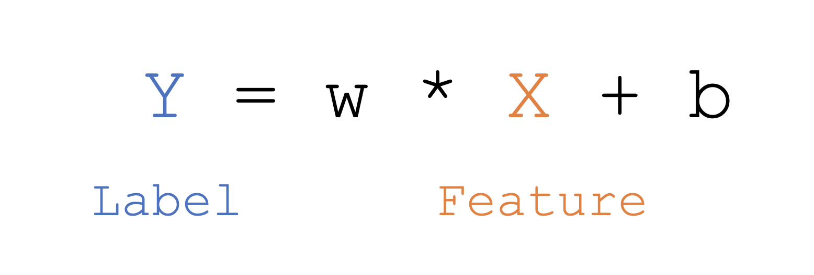
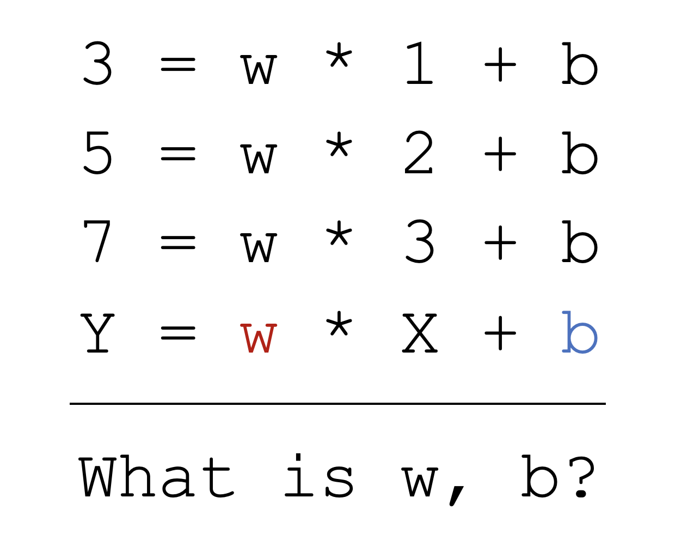
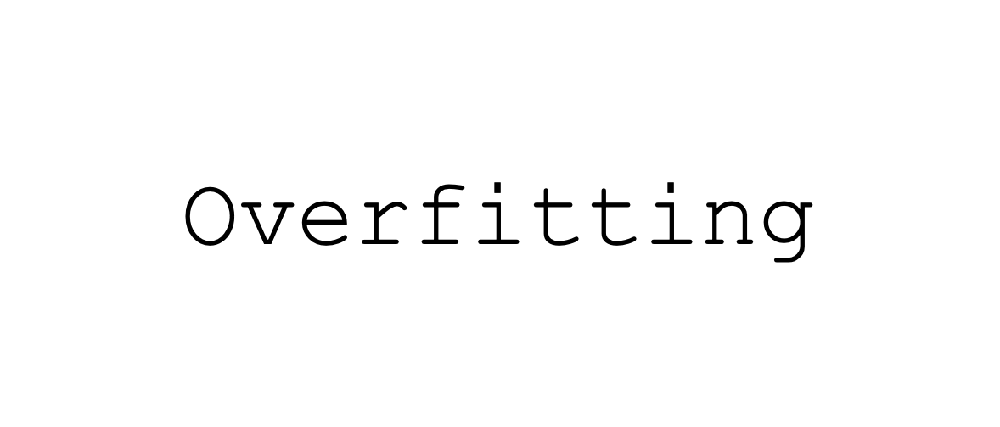
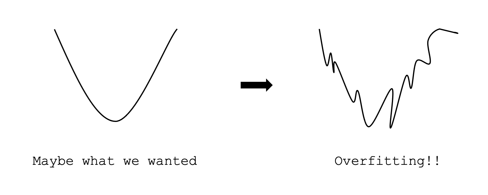

Machine Learning 2 - Learning의 의미와 Data 이해 - Microsoft Learning Platform MOOC

머신러닝과 딥러닝은 모두 input data를 받아서 처리한 후에 머신러닝의 경우 전통적인 머신러닝 모델을, 딥러닝의 경우 뉴럴 네트워크를 활용해서 output을 만들어낸다. 이런 전반적인 흐름은 비슷하지만 머신러닝은 Feature Engineering을 하고, 딥러닝은 Feature Extraction이 일어난다는 차이가 있다.
앞서 딥러닝이 머신러닝의 한 종류라고 했는데 이게 무슨 소리냐. Feature Engineering이라는 것은 사람이 여러개의 Feature가 있을 때 어떤 것이 최종 결과물에 영향을 미칠 지 고려해 가면서 변수를 조정하고 빼는 과정이고, Feature Extraction은 단어에서 미루어 짐작할 수 있듯이 Extraction 자체가 추출한다는 뜻이다. 그래서 이 추출하는 것은 사람이 뽑아내는 것이 아니라 기계가 Feature에서 바로 특징을 뽑아내는 것이기 때문에 사람은 Feature를 건들이지 않는다.
즉, Feature Extraction은 사람이 해주어야하는 일을 자체적으로 모델이 해주는 것이기 때문에 사람의 손이 덜 가고 그 도메인에 대한 이해가 머신러닝에 비해서는 덜 필요로 한다.
Feature Engineering
Feature Engineering 이라는 것은 어떻게 할 수 있을까? 타이타닉호의 생존자와 사망자의 데이터를 가지고 예를 들어보자. 우리는 어떤 사람이 타이타닉호에 탑승했을 때 생존을 할 지 사망을 할 지 예측을 하고 싶다. 그러면 그 생존 여부에 영향을 미치는 데이터가 무엇일지, 영향을 미치지 않는 데이터는 또 무엇일지 생각해봐야 할 것이다.
자, 그렇다면 데이터를 나열해보자. 먼저 이름이 주어졌다. 상식적으로 이름때문에 타이타닉호에서 살아남지 못했다고 말할 수는 없다. 그 다음 나이와 성별이 주어졌다. 여성과 저연령층, 고연령층은 추운 바다에서 오래 살아남을 확률이 적을 뿐더러, 만약 구조 작업 중에 노인이나 아이, 여성을 먼저 구하라는 지시가 있었다면 나이와 성별은 분명 유의미한 데이터이다. 선실의 등급 또한 높을수록 먼저 구조될 확률이 높았기 때문에 유의미한 데이터라 볼 수 있다.
이렇게 각각의 데이터를 보면서 최종 결과물에 영향을 끼칠지 끼치지 않을지 생각하면서 데이터를 골라내는 작업이 바로 Feature Engineering이다. 그러면 우리는 이름은 제외하고 나이와 성별, 선실의 등급 등의 Feature만을 가지고 모델링을 할 수가 있을 것이다.
하지만 이렇게 단순히 몇가지 Feature만 골래내는 작업을 한다고 하더라도 어느정도 시간이 걸리는 것을 알 수 있다. 데이터 하나하나 이것이 어떤 의미인지 생각해보고 결과물에 영향을 끼칠지 고려해봐야 하기 때문에 시간이 꽤 걸릴 것이다.
Feature & Label

우리나라에서 딥러닝, 머신러닝으로 굉장히 유명하신 김성은 교수님께서 위 수식만 이해하다면 누구나 다 머신러닝을 할 수 있다라고 말씀하셨다. X가 어떻게 변하냐에 따라 Y가 변하고 이 Y는 우리가 정답, 태그, 타겟, 레이블 등 다양한 이름으로 부르는데 일반적으로는 레이블이라고 가장 많이 이야기 하고 있다. 아무튼 우리는 X가 변하는 거에 따라서 Y가 어떻게 변하는지를 구하고 싶은 것이 목적이다.
연차에 따른 연봉에 변화를 적은 표가 있다고 해보자. 물론 연봉의 변화가 연차 하나에만 영향을 받는 것은 아니지만 간단히 봤을 때 연차가 바로 Feature가 되는 것이고 연봉이 Lable이라고 말할 수 있다. 한가지 확실한 것은 연봉에 따라서 연차가 변하는 것이 아니라 연차에 따라서 연봉이 바뀐다는 것이다. 이것이 Feature와 Lable의 관계이다. Feature와 Lable을 가지고 좌표평면상에 데이터를 찍어 하나의 선을 그려볼 수 있을 것이다. 그럼 이 선에 따라서 우리는 나중에 모르는 X값을 추측하고 싶을 때 이 직선 값에 대입을 해서 모르는 Y값을 구할 수 있게 되는 것이다.

X와 Y의 데이터를 여러개를 대입해보면 w와 b를 알 수 있다. 그럼 위 문제의 정답은 w =2이고 b = 1가 된다. 이런 식으로 주어진 데이터 여러개를 바탕으로 수식을 구해내는 이 작업을 머신러닝이 하는 것이다. 이렇게 수식이 간단한 경우에는 암산으로도 문제를 해결하겠지만 실제로는 데이터가 훨씬 더 복잡하고 양이 많다. 이때 머신러닝 모델이 하는 일이 바로 w, b를 구하는 것이고, 그 다음 하나의 수식이 나오면 x자리에 새로운 데이터 값을 집어 넣었을 때 y(결과값)가 얼마가 될지 예측을 할 수 있는 것이다. 우리가 머신러닝, 딥러닝 이렇게 러닝을 붙이는 것이 w와 b를 러닝 한다라고 이해하면 된다.
Training Data & Test Data
데이터가 있으면 70%는 훈련 데이터 즉 기계를 학습시키기 위해서 사용하고, 나머지 30%는 기계가 얼마나 잘 학습했는지 테스트 했는지 확인해보기 위해서 사용한다. 이때 보통 데이터는 하나의 칼럼을 기준으로 순차 정렬이 되어 있는 경우가 많기 때문에 위에서부터 70%, 30%씩 나누면 특정 값 이상 부터는 기계가 한번도 학습해보지 못한 데이터가 존재할 수 있게 되는 것이다. 그래서 데이터를 다양하게 섞어서 쓸 수 있게 준비를 하는 랜덤 스플릿이라는 방법을 사용할 수 있다. 이렇게 데이터를 준비하고 잘 섞기만 하면 끝나냐. 그건 또 아니다. 주의해야 할 부분이 하나 더 있는데 바로 오버 피팅이라는 것이다.
Overfitting
머신러닝 딥러닝을 하다보면 오버 피팅이 일어나는 경우가 굉장히 많다. 그래서 오버 피팅을 피하기 위한 여러가지 시도를 한다. 그렇다면 오버 피팅이라는 것이 무엇일까?

필자는 옷에 대해서 관심이 아주 많은 편이다. 한국에서 옷을 넉넉하게 크게 입으면 흔히 ‘오버핏으로 입었다.’라고 표현을 하는데, 이는 잘못된 표현이다. 실제로는 옷을 나 뿐만 아니라 나보다 덩치가 큰 사람까지 입을 수 있게 입은 것을 Underfit이라고 부르고 자신에게 딱 맞게 입는 것을 Overfit이라고 말한다. 즉, 나에게 너무 딱 맞는 핏으로 만들다 보면 내가 아닌 다른 사람들은 절대 입지도 못하고 나도 조금만 살이 찌거나 빠지면 옷이 전혀 맞지 않는 상태가 되는 것이다. 그래서 양복을 맞출 때에도 오버핏으로 맞추기 보다는 내가 살이 찌거나 빠질 것을 감안하여 피팅을 하는 경우가 일반적이다. 머신러닝도 마찬가지이다.

데이터를 좌표평면 상에서 특정 점들의 집합으로 가지고 있다고 할 때 우리가 원하는 모델은 어느 데이터에나 잘 맞는 일반적인 모델이다. 그런데 가지고 있는 데이터들에 너무 치중돼서 학습을 하다 보면 오버 피팅이 일어나게 된다. 위 그림에서 첫번째 그래프를 보면 자연스럽게 모델이 만들어진 반면 오버 피팅이 일어난 경우는 그래프가 주어진 데이터에 너무 최적화되기 위해서 이상하게 꺾이는 것이 생기는 것이다. 이것을 바로 오버 피팅이라고 한다.
오버 피팅이 일어난다는 게 무슨 의미일까? 오버 피팅이 일어나면 우리가 가지고 있는 훈련 데이터에 대해서는 100%의 정확도를 보일 것이다. 하지만 우리가 가지고 있지 않은 일반적인 데이터를 넣었을 때 그 때에도 결과값이 제대로 나올 수 있을까? 아무래도 좀 이상하게 나올 것이다. 그렇기 때문에 오버 피팅을 주의해야 한다.
우리는 오버 피팅을 어떻게 피할 수 있을까? 일단 데이터가 적은 경우에 오버 피팅이 많이 일어난다. 그래서 데이터를 많이 준비할 수 있으면 데이터를 많이 준비하는 것이 좋고, 만약 데이터를 충분히 많이 모을 수 없는 경우에는 Data Augmentation이라는 작업을 할 수 있다. 데이터 부풀리기라는 뜻이고 이미지 학습에 많이 사용하고 있다. 또한 알고리즘 중에서 오버 피팅이 잘 일어나지 않는 알고리즘을 선택해서 학습을 시킬 수도 있을 것이고 그 외에 Regularization(규제화)라는 값을 추가하거나 Dropout이라는 것을 추가할 수도 있다.
머신러닝 Workflow
-
어떤 문제를 풀기 위해서 머신러닝을 하려고 하는지 문제를 정의한다.
-
문제를 풀 수 있도록 Training set과 Test set으로 나눠 Data set을 준비한다.
-
어떤 알고리즘으로 어떤 모델로 데이터를 학습 시킬 것인지 모델을 설정한다. 만약 내가 Classification을 하겠다면 그걸 풀기 위해서 svm 할지 의사 결정 트리를 사용할지 그런 것들을 설정하는 것이다.
-
훈련과 평가를 여러번 거친 다음 어떤 모델로 만든 것이 가장 좋구나라는 게 판단이 되면 그 모델을 활용하게 되는 것이다.